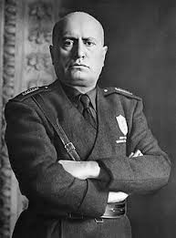
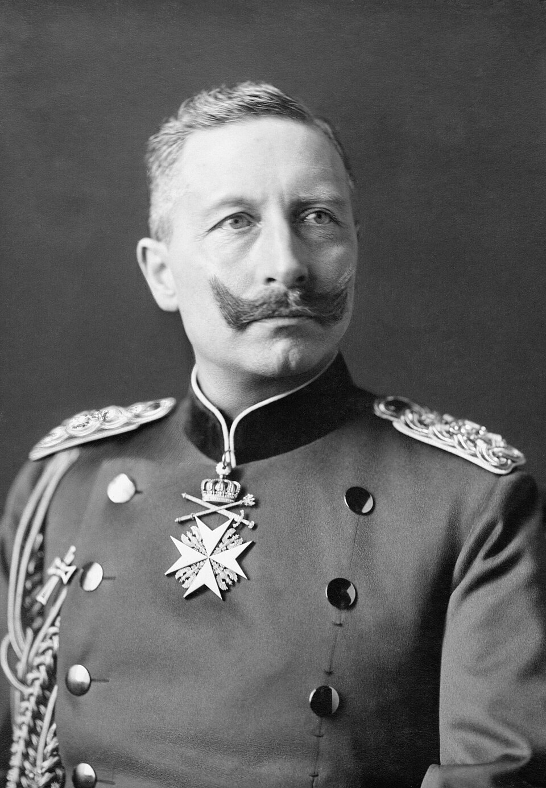
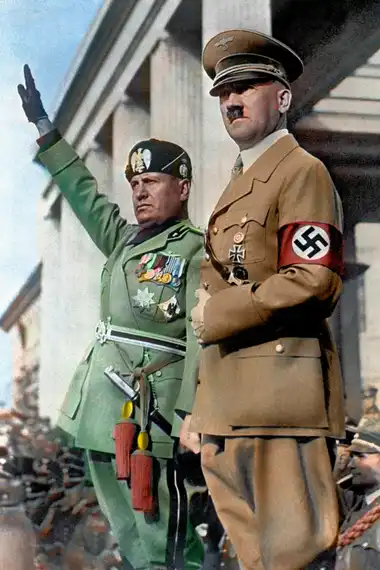
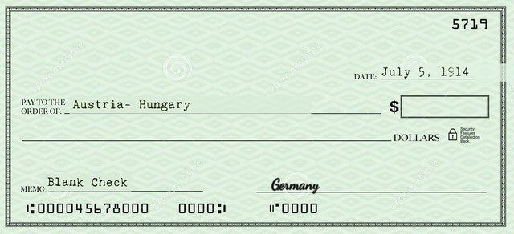

Joseph Stalin was the leader of the Soviet Union who transformed the country into a major world power but ruled with extreme brutality. After Lenin’s death, Stalin gained control by eliminating rivals and creating a dictatorship. He forced rapid industrialization and strict government control, which modernized the USSR but caused famine, fear, and millions of deaths. During World War II, Stalin played a crucial role in defeating Nazi Germany, especially after the Battle of Stalingrad, which became a turning point in the war. After the conflict, Stalin expanded Soviet influence and helped start the Cold War. His leadership reshaped global politics but left a legacy marked by fear, repression, and authoritarian power.
Hitler
Adolf Hitler was the dictator of Nazi Germany and one of the most important—and destructive—figures of the 20th century. He came to power in 1933 by taking advantage of Germany’s economic problems and using powerful propaganda. Once in control, he turned Germany into a totalitarian state, eliminating all opposition and spreading racist ideas that targeted Jews and other groups. Hitler’s desire for expansion led him to invade Poland in 1939, starting World War II. His decisions caused massive destruction, the Holocaust, and millions of deaths. Hitler’s aggressive leadership and extreme ideology changed world history and left a legacy of warning about dictatorship and hatred.
Mussolini
Benito Mussolini was the founder of Fascism and the dictator of Italy from the 1920s until World War II. He rose to power by promising to restore Italy’s strength and pride after World War I. Mussolini created a government based on nationalism, strict control, violence, and obedience to one leader—himself. He used fear, propaganda, and the secret police to silence opponents. Mussolini’s alliance with Hitler strengthened the Axis Powers and helped spread conflict across Europe. His decision to join World War II on Germany’s side brought destruction to Italy and eventually led to his fall. Mussolini’s rule showed how dangerous and oppressive fascist

Kaiser Wilhelm
Kaiser Wilhelm II was the last German emperor, and his aggressive policies and decisions helped push Europe into World War I. He wanted Germany to become a powerful empire like Britain and France, so he built up the military and challenged other countries. Wilhelm supported Austria-Hungary after the assassination of Archduke Franz Ferdinand, which helped trigger World War I. His poor leadership during the war led to suffering and eventually the collapse of the German Empire. Wilhelm was forced to abdicate in 1918, ending centuries of monarchy in Germany. His actions and ambitions played a major role in the outbreak of the First World War.

Tsar Nicholas II
Tsar Nicholas II was the last emperor of Russia, and his weak leadership led to the fall of the Russian Empire. He struggled to manage the country’s economy, government, and growing social problems. During World War I, Russia suffered massive losses, food shortages, and increasing anger from the people. Nicholas II made poor decisions and failed to respond to the needs of his citizens, which caused the Russian Revolution in 1917. He was forced to step down, ending over 300 years of Romanov rule. His fall allowed the rise of the Soviet Union under Lenin and later Stalin. Nicholas II’s leadership is remembered as a major reason for the collapse of imperial Russia.
Decisons they took
Stanlin-Signing the Nazi–Soviet Pact
Stalin became the leader of the Soviet Union after Lenin and built a powerful but extremely harsh dictatorship. He forced rapid industrialization, used secret police, and eliminated anyone he saw as a threat. During World War II, Stalin helped defeat Nazi Germany, especially through major battles like Stalingrad. Even though he strengthened the Soviet Union, he caused fear, suffering, and the deaths of millions.
Hitler-Poland Invasion (1939)
Adolf Hitler is closely connected to the invasion of Poland because his attack on September 1, 1939, officially started World War II. Hitler wanted to expand German territory and create a powerful empire across Europe. By invading Poland, he broke international agreements and proved that he was willing to use force to achieve his goals. This invasion caused Britain and France to declare war, turning a local conflict into a global one. Hitler’s decision showed his aggressive ambitions and the danger of totalitarian leadership.
Mussolini-Forming the alliance with Hitler
Benito Mussolini is remembered for forming Fascism, the political system he created in Italy in the 1920s. He believed in extreme nationalism, obedience, and strong control under one leader. Mussolini used violence, propaganda, and fear to shape Italian society and silence anyone who disagreed with him. His creation of Fascism inspired other dictators—especially Hitler—and helped create the Axis Powers during World War II.

Kaiser Wilhelm-Giving Austria-Hungary the “Blank Check”
Kaiser Wilhelm II was the last German emperor and a key figure in the start of World War I. He wanted Germany to be a strong imperial power, so he built up the military and supported aggressive actions in Europe. When Austria-Hungary declared war on Serbia, Wilhelm supported them, helping the conflict spread across the continent. His poor choices and ambition pushed Europe into a massive war that caused millions of deaths.

Tsar Nicholas II-Entering WWI by mobilizing Russia’s army against Germany
Tsar Nicholas II was the last emperor of Russia, and his weak leadership led to the fall of the Russian Empire. He struggled to handle economic problems, protests, and military failures during World War I. As Russia suffered hunger and huge battlefield losses, people lost trust in him. In 1917, the Russian Revolution forced him to abdicate, ending over 300 years of Romanov rule.
Definitions
Alliances:Partnerships between countries formed for mutual protection or cooperation.
Aggression:Hostile or forceful actions taken by a country to control or dominate others.
Territory:Land or regions under the control of a particular nation or government.
Front:A geographic area where armies engage in combat.
Expansion:The act of a nation increasing its land, power, or influence.
Surrender:The formal giving up of resistance by a country or military force.
Superpower:A nation with major global influence in politics, military strength, and economics.
Dictatorship:A government controlled by one leader with absolute power.
Genocide:The intentional and systematic destruction of a group of people.
International Organization:A group formed by multiple countries to work together on global issues.